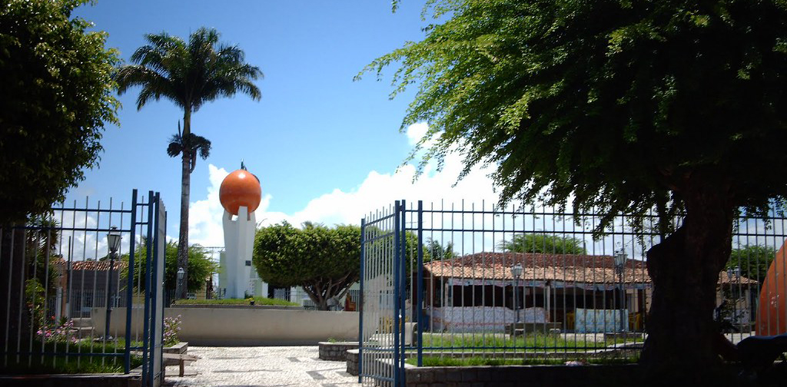

Boquim
História
Segundo histórias populares, cerca de 10 km da atual cidade de Boquim, o coronel José Batista fundou o povoado de Lagoa Vermelha na primeira metade do século XIX; e em 1857 o mesmo foi elevado a vila de Lagoa Vermelha por meio de lei provincial, com sede no antigo povoado. No entanto a localidade passou por várias intercorrências que prejudicavam seus habitantes; como surtos de doenças que afetavam o local no inverno e as frequentes enchentes do rio Piauí. Em 1869 a localidade chegou a ficar ilhada por vários dias.
Frente a isso o Padre Manoel Nogueira Cravo, vigário de Lagoa Vermelha, bem como Antônio Manoel da Fraga e o maior Venancio Fernandes lutavam para a transferência da sede para uma localidade próxima, chamada "Boquinha da Mata" (apelidada "Boquim"), cujas terras foram doadas por Antônio Araújo. Em 21 de março de 1870, por meio da Lei provincial nº 836, transfere-se a sede vila de Lagoa Vermelha para a povoação de Boquim. de outubro de 1926 é elevado a categoria de município de Boquim, pela lei estadual nº 959. Buquim teve sua grafia alterada para Boquim pelo decreto estadual nº 3334, de 27 de janeiro de 1976.
Boquim destaca-se pela citricultura, produzindo laranja, tangerina, limão, além de maracujá; atividade iniciada a partir da década de 20, quando chegaram as primeiras mudas de laranjeiras “baía”, e incrementada na década de 60 por melhor assistência técnica e subsídios financeiros. Pecuária de bovinos, eqüinos, ovinos e suínos, e a avicultura de galináceos são outras produções importantes na região
fonte: https://boquim.se.gov.br/site/?alias=pmboquim&p=cidade&a=historiaPontos Turísticos
Balneário Fonte da Mata
A Fonte da Mata marca um importante capítulo na história de Boquim, pois vem dela a origem do nome do Município. Conhecida no período colonial como "Boquinha da Mata" teve o nome deturpado pelo caboclo para "Boquim", originando daí o nome popular da freguesia.
Balneário Alto das Palmeiras
O balneário é um dos maiores pontos de diversão das famílias de Boquim, por possuir piscinas, restaurantes, quisques e área para crianças.
Dados Gerais de acordo com o IBGE
| Prefeito (a) | Eraldo Andrade |
| Vice-Prefeito (a) | José Francisco de Almeida |
| Site do município | https://boquim.se.gov.br/site/?alias=pmboquim&p= |
| Área territorial | 214,566 km² |
| População estimada | 26.750 pessoas |
| Densidade demográfica | 124,67 hab./km² |
| IDHM | 0,604 |
| PIB per capita | R$ 5.376,44 |